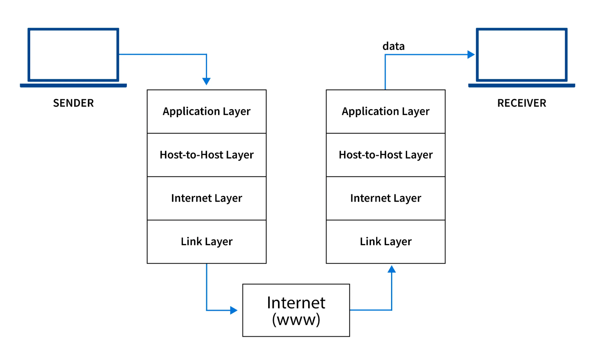

Lo stack TCP/IP
Lo stack TCP/IP è un insieme di protocolli di comunicazione utilizzati per la trasmissione di dati su una rete come Internet. È composto da vari livelli, ognuno dei quali svolge una funzione specifica nel processo di comunicazione. La struttura dello stack TCP/IP si compone principalmente di quattro livelli: Applicazione, Trasporto, Internet e Accesso alla rete.
1. Livello Applicazione
Il livello applicativo è il livello più alto dello stack TCP/IP e si occupa di fornire i servizi di rete che gli utenti finali utilizzano. I protocolli comuni a questo livello includono HTTP (HyperText Transfer Protocol) per la navigazione web, FTP (File Transfer Protocol) per il trasferimento di file, e SMTP (Simple Mail Transfer Protocol) per la posta elettronica.
2. Livello di Trasporto
Il livello di trasporto è responsabile di garantire che i dati vengano trasmessi correttamente tra i dispositivi. I due principali protocolli di questo livello sono TCP (Transmission Control Protocol), che garantisce una comunicazione affidabile, e UDP (User Datagram Protocol), che è più veloce ma meno sicuro. TCP si occupa del controllo degli errori e dell'ordinamento dei pacchetti di dati.
3. Livello Internet
Il livello Internet si occupa dell'indirizzamento e del routing dei pacchetti di dati tra i dispositivi sulla rete. Il principale protocollo di questo livello è l'IP (Internet Protocol), che si occupa di indirizzare i pacchetti di dati da un dispositivo a un altro. Gli indirizzi IP (IPv4 o IPv6) sono utilizzati per identificare univocamente i dispositivi sulla rete.
4. Livello Accesso alla Rete
Il livello di accesso alla rete è responsabile della trasmissione fisica dei dati sulla rete. Questo livello gestisce l'invio e la ricezione dei pacchetti attraverso il mezzo fisico, come cavi Ethernet, Wi-Fi o altre tecnologie di rete. Il protocollo Ethernet è uno degli esempi più comuni di questo livello.
Conclusioni
Lo stack TCP/IP è alla base di Internet e di molte altre reti di comunicazione. Ogni livello è progettato per svolgere un compito specifico, dalla trasmissione di dati fino alla gestione delle connessioni. Comprendere questi livelli aiuta a capire come i dati vengono trasmessi su Internet e come i dispositivi comunicano tra loro.